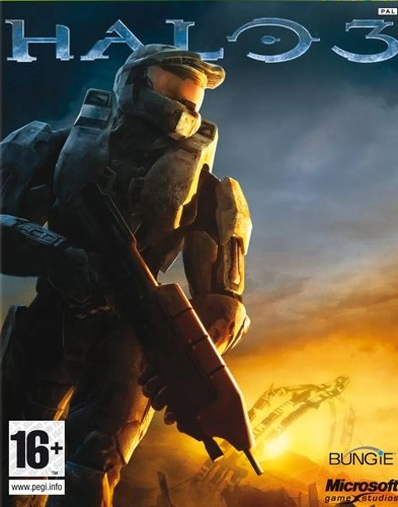

Halo Universe
 Halo 3 es un Shooter en Primera Persona (FPS) de ciencia ficción creado por Bungie y Microsoft Games Studios exclusivamente para Xbox 360. Tiene el lema de "Finish the Fight" (Termina la Batalla). Representa el final de la ya clásica trilogía, y en él se resuelve por fin todo el misterio envolvente a la historia desarrollada en los dos títulos previos, hasta la salida de Halo Wars y Halo: Reach. Halo 3 tiene los modos Campaña, Matchmaking, Multijugador, Forge y Cine. Resumen:Tras los eventos de Halo 2, John-117 cae a la Tierra y es rescatado por el Sargento Johnson y el Inquisidor Thel 'Vadam. Se reagrupan en la base Nido del Cuervo, donde la Comandante Miranda Keyes informa que el Profeta de la Verdad está excavando un artefacto Forerunner llamado el Arca, el cual podría activar todos los anillos de Halo. Sin embargo, el Covenant ataca la base, obligando a la evacuación. El Jefe activa una bomba para frenar a los invasores y escapa. El Jefe Maestro lidera una ofensiva en Voi, destruyendo defensas Covenant y enfrentándose a una nave infestada por el Flood. Encuentra un mensaje de Cortana, quien advierte que Gran Caridad, ahora infectada por el Flood, se dirige a la Tierra. Para evitarlo, el Jefe y los Separatistas Elites liderados por Rtas 'Vadum cruzan un portal que los lleva al Arca, una gigantesca instalación Forerunner fuera de la galaxia. En el Arca, las fuerzas humanas y separatistas atacan la Ciudadela, donde el Profeta de la Verdad planea activar los anillos. Johnson es capturado y Keyes intenta evitar la activación, pero es asesinada. Antes de que Verdad logre su objetivo, el Inquisidor lo mata. Con la amenaza Covenant eliminada, el Flood traiciona su alianza temporal, obligando a los protagonistas a luchar nuevamente. El Jefe Maestro viaja a Gran Caridad, rescata a Cortana, y destruye la ciudad infestada. Luego, junto al Inquisidor, viaja a un nuevo anillo Halo en construcción para destruirlo antes de que se active. 343 Guilty Spark, al intentar impedir la destrucción, mata a Johnson, pero el Jefe lo elimina. Halo es activado, destruyendo el Flood y el Arca. En la huida, la nave Forward Unto Dawn se parte en dos: el Inquisidor llega a la Tierra, mientras que el Jefe Maestro y Cortana quedan a la deriva en el espacio. El Jefe entra en criogénesis, dejando el mensaje: "Cuando me necesites... despiértame." En la versión legendaria, la nave se dirige hacia un planeta desconocido, dando inicio a Halo 4. |